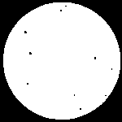
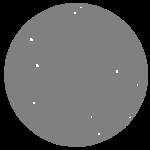
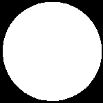
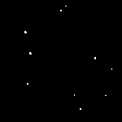
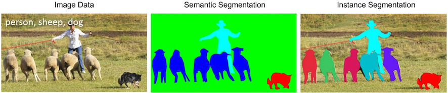
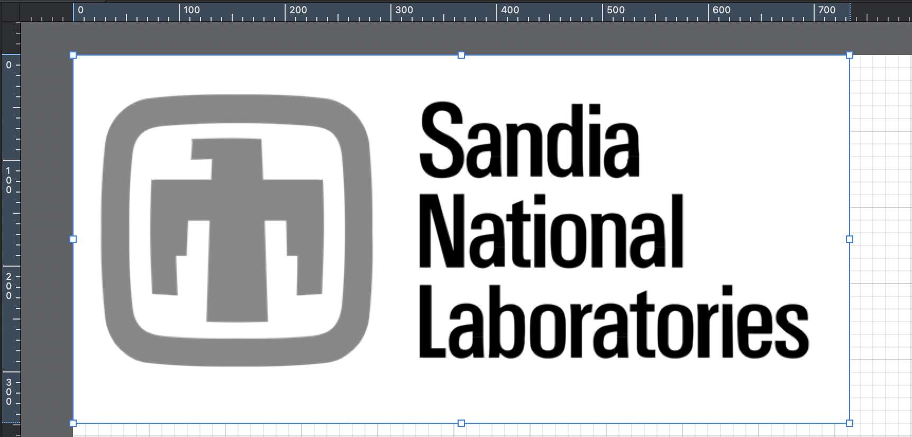
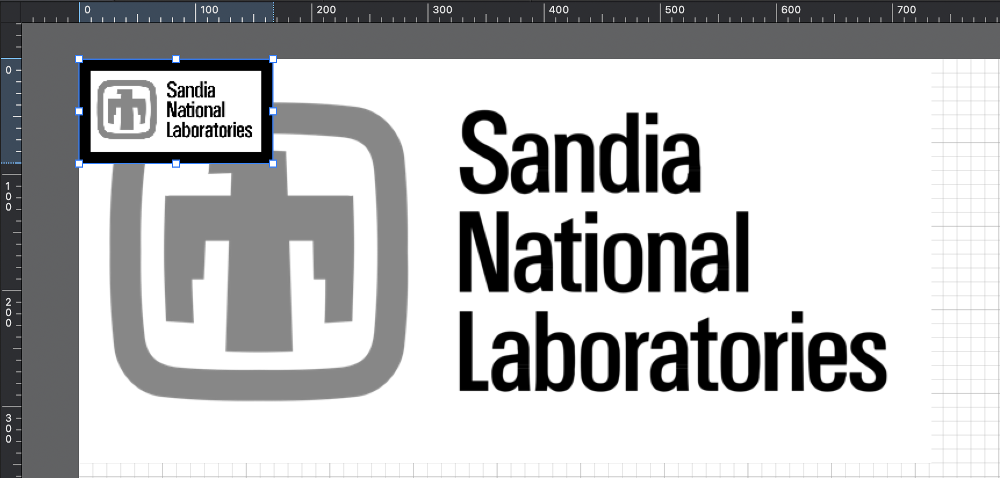
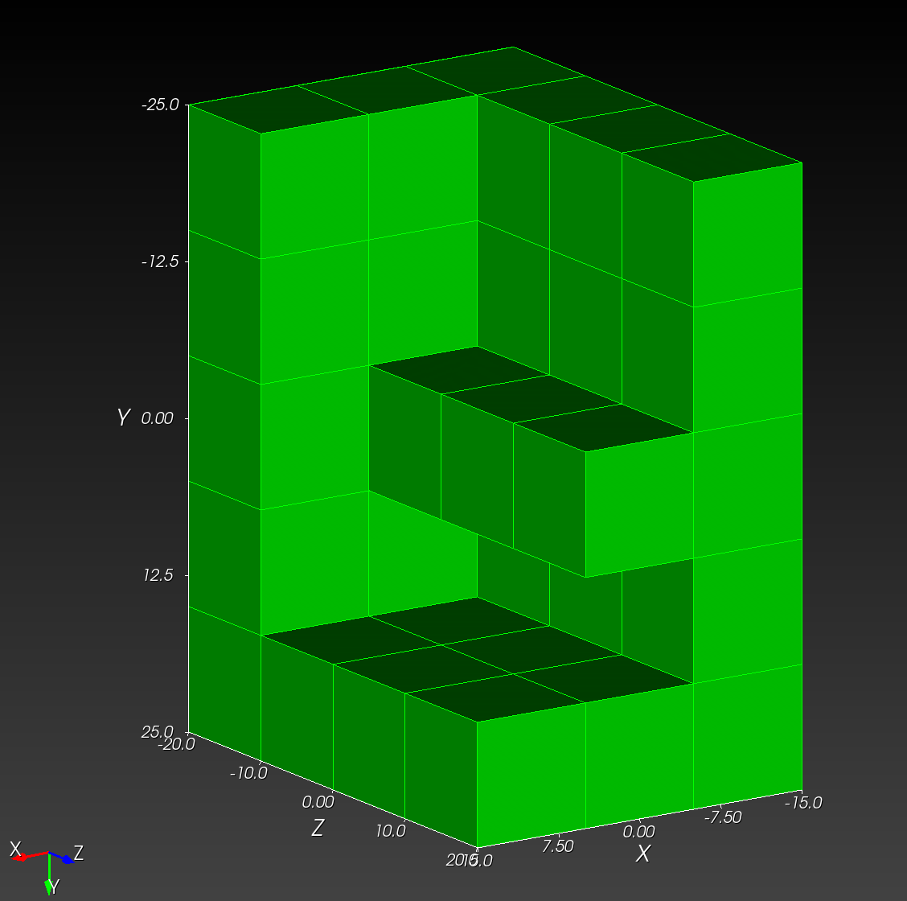
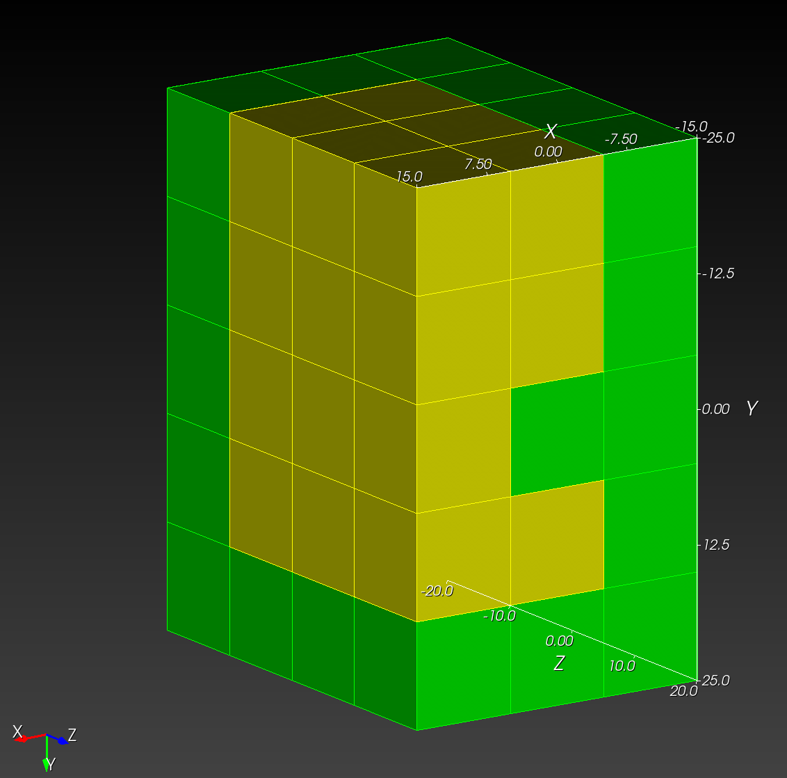

Introduction
recon3d is a collection of tools developed at Sandia National Laboratories for reconstruction of finite element discretizations from a 3D stack of images (often experimental x-ray Computed Tomography data).

Installation
Choose one of the installation types,
The Client Installations are recommended for users who will use recon3d in an analysis workflow.
- Knowledge of the Python programming language is not necessary.
- The Full Client includes the tutorial files.
- The Minimal Client does not include the tutorial files.
The Developer Installation is recommended for users who will create or update functionality. Knowledge of the Python programming language is required.
Full Client Installation
Clone the repository,
git clone git@github.com:sandialabs/recon3d.git
The preceding git clone command will clone the recon3d repository into your current working directory by making a new folder called recon3d.
Change into the recon3d directory,
cd recon3d
Virtual Environment
For all installations, a virtual environment is recommended but not necessary.
HPC users may have to load a module to use Python 3.11, e.g.,
module load python3.11 # or similar command specific to your host
Select an installation path. For example, these instructions show how to install to your home (~) directory.
cd ~ # change to the destination directory, e.g., home (~)
deactivate # deactivate any active virtual environment
rm -rf .venv # remove any previous virtual environment, e.g., ".venv"
python3.11 -m venv .venv # create a new virtual environment called ".venv"
# with Python version 3.11
Activate the virtual environment based on your shell type,
source .venv/bin/activate # for bash shell
source .venv/bin/activate.csh # for c shell
source .venv/bin/activate.fish # for fish shell
.\.venv\Scripts\activate # for powershell
automesh Prerequisite
If the host has an out-of-date rust compiler, then automesh Python wheel
must be built for the specific host,
cd ~/temp
git clone git@github.com:sandialabs/recon3d.git
module load ...
python3.11 -m venv .venv
# pip install build
# python -m build # makes the .whl
pip install maturin
python3.11 -m maturin build --release -F python -i /usr/bin/python3.11
pip install . --force-reinstall --no-cache-dir
pip install automesh-0.3.1-cp311-cp311-manylinux_2_28_x86_64.whl
twine upload automesh-0.3.1-cp311-cp311-manylinux_2_28_x86_64.whl
pip install --trusted-host pypi.org automesh-0.3.1-cp311-cp311-manylinux_2_28_x86_64.whl
Install recon3d
Install the recon3d module,
pip install .
Developer Installation
Follow the instructions for the Full Client Installation, replacing the pip install . command with the following:
pip install -e .[dev]
The -e installs the code in editable form, suitable for development updates.
Minimal Client Installation
Install recon3d from the Python Package Index (PyPI).
pip install recon3d
All Installations
Confirm the installation was successful by running the following from the command line:
recon3d
which will provide the following output:
-------
recon3d
-------
recon3d
(this command) Lists the recon3d command line entry points
binary_to_semantic <path_to_file>.yml
Converts binary image stack to semantic image stack in a
folder specified in the user input .yml file.
Example:
# Edit path variables in
# ~/recon3d/docs/userguide/src/binary_to_semantic/binary_to_semantic.yml
(.venv) recon3d> binary_to_semantic binary_to_semantic.yml
downscale <path_to_file>.yml
Downscales images in a folder specified in the user input .yml file.
Example:
# Edit path variables in
# ~/recon3d/docs/userguide/src/downscale/downscale_thunder.yml
(.venv) recon3d> downscale downscale_thunder.yml
grayscale_image_stack_to_segmentation <path_to_file>.yml
Converts a series of grayscale images to a segmentation.
Example:
# Edit path variables in
# ~/recon3d/docs/userguide/src/utilities/grayscale_image_stack_to_segmentation.yml
(.venv) recon3d> grayscale_image_stack_to_segmentation grayscale_image_stack_to_segmentation.yml
hello
Prints 'Hello world!' to the terminal to illustrate a command line entry point.
hdf_to_image <path_to_file>.yml
From a dataset contained within a .hdf file specified by the input
.yml file, creates an image stack with the same dataset name in
the specified parent output folder.
Example:
# Edit path variables in
# ~/recon3d/docs/userguide/src/hdf_to_image/hdf_to_image.yml
(.venv) recon3d> hdf_to_image hdf_to_image.yml
hdf_to_npy <path_to_file>.yml
From a dataset contained within a .hdf file specified by the input
.yml file, creates a NumPy .npy file from the segmentation data.
Example:
# Edit path variables in
# ~/recon3d/docs/userguide/src/to_npy/hdf_to_npy.yml
(.venv) recon3d> hdf_to_npy hdf_to_npy.yml
image_to_hdf <path_to_file>.yml
From a single image (or image stack) in a folder specified in the
user input .yml file, creates a .hdf file in the specified
output folder.
Example:
# Edit path variables in
# ~/recon3d/docs/userguide/src/image_to_hdf/image_to_hdf.yml
(.venv) recon3d> image_to_hdf image_to_hdf.yml
image_to_npy <path_to_file>.yml
From a series of images in a folder specified in the user input
.yml file, creates a NumPy .npy file in the specified output folder.
Example:
# Edit path variables in
# ~/recon3d/docs/userguide/src/to_npy/image_to_npy.yml
(.venv) recon3d> image_to_npy image_to_npy.yml
instance_analysis <path_to_file>.yml
Digest a semantic segmentation accessible as a folder containing an image
stack specified in the user input .yml file.
Example:
# Edit path variables in
# ~/recon3d/docs/userguide/src/instance_analysis/instance_analysis.yml
(.venv) recon3d> instance_analysis instance_analysis.yml
npy_to_mesh <path_to_file>.yml
Converts an instance or semantic segmentation, encoded as a .npy file,
to an Exodus II finite element mesh using automesh.
See https://autotwin.github.io/automesh/
Example:
# Edit path variables in
# ~/recon3d/docs/userguide/src/npy_to_mesh/letter_f_3d.yml
(.venv) recon3d> npy_to_mesh letter_f_3d.yml
semantic_to_binary <path_to_file>.yml
Converts semantic image stack to series of binary image stacks in
a folder specified in the user input .yml file
Example:
# Edit path variables in
# ~/recon3d/docs/userguide/src/binary_to_semantic/semantic_to_binary.yml
(.venv) recon3d> semantic_to_binary semantic_to_binary.yml
void_descriptor <path_to_file>.yml
Work in progress, not yet implemented.
From a pore dataset contained within a hdf file specified by
the input .yml file, compute the void descriptor attributes
for the void descriptor function.
Example:
# Edit path variables in
# ~/recon3d/docs/userguide/src/void_descriptor/void_descriptor.yml
(.venv) recon3d> void_descriptor void_descriptor.yml
binary_to_semantic (and reverse)
binary_to_semantic converts segmented binary images, where metal is labeled as True (white) and air/pores as False (black), into semantic image stacks with distinct integer labels for each constituent (air, metal, and porosity), facilitating separate analyses for each class in the context of x-ray computed tomography data of additively manufactured tensile samples containing porosity.
Segmented data broadly encompasses any annotated image that can be used for subsequent image processing or analysis, and a binarized image can be considered to be the simplest case of an image segmentation. Often, grayscale x-ray computed tomography data (a key application of the recon3d module), a binarized image for a metallic sample containing internal voids can easily distinguish the metal and air, with air encompassing both the region outside the metal sample and any internal porosity.
Following is an example of the binary_to_semantic and semantic_to_binary workflow specifically designed for the NOMAD 2024 binarized CT data, where metal is labelled as "True" and the air/pores are labelled as "False".
Here an example image from a x-ray CT cross-section of a metal cylinder with voids will be used for demonstration. The segmented binary image contains pixel values where metal = 1 or True (white) and everything else = 0 or False (black)

Semantic image stacks are one of the key data types used in the recon3d module, and are a key class of segmented data in the broader field of image processing. To perform statistical analyses on the metal or the pores independently for these images, we must convert binary image stacks to a semantic image stack, in which each separate constituent (air, metal, and porosity) is labelled with a unique integer label. In this way, semantic images group objects based on defined categories. Following the example above, the classes are labeled as air = 0 (black), metal = 1 (gray) and internal porosity = 2 (white).

With recon3d installed in a virtual environment called .venv, the binary_to_semantic and semantic_to_binary functionality is provided as a command line interface.
Contents of binary_to_semantic.yml:
cli_entry_points:
- binary_to_semantic
image_dir: tests/data/cylinder_machined_binary # (str) path to images
out_dir: tests/data/output/binary_to_semantic # (str) path for the processed files
Contents of semantic_to_binary.yml:
cli_entry_points:
- semantic_to_binary
image_dir: tests/data/cylinder_machined_semantic # (str) path to images
out_dir: tests/data/output/semantic_to_binary # (str) path for the processed files
selected_class: pores
class_labels:
air:
value: 0
metal:
value: 1
pores:
value: 2
To further illustrate the semantic image stack, binary images from the class labels are shown. On the (left) air is 1 or True (white), (center) metal is 1 or True (white), (right) internal porosity is 1 or True (white)
 
With recon3d installed in a virtual environment called .venv, the instance_analysis functionality is provided as a command line interface. Provided a segmented image stack containing a continuous phase, such as the metal, containing pores, the semantic image stack can be generated.
binary_to_semantic binary_to_semantic.yml produces:
Processing specification file: binary_to_semantic.yml
Success: database created from file: binary_to_semantic.yml
key, value, type
---, -----, ----
cli_entry_points, ['binary_to_semantic'], <class 'list'>
image_dir, tests/data/cylinder_machined_binary, <class 'str'>
out_dir, tests/data/output/binary_to_semantic, <class 'str'>
Provided a semantic image stack with labeled classes, binary image stacks of each class can be generated.
semantic_to_binary semantic_to_binary.yml produces:
Processing specification file: semantic_to_binary.yml
Success: database created from file: semantic_to_binary.yml
key, value, type
---, -----, ----
cli_entry_points, ['semantic_to_binary'], <class 'list'>
image_dir, tests/data/cylinder_machined_semantic, <class 'str'>
out_dir, tests/data/output/semantic_to_binary, <class 'str'>
selected_class, pores, <class 'str'>
class_labels, {'air': {'value': 0}, 'metal': {'value': 1}, 'pores': {'value': 2}}, <class 'dict'>
image_to_hdf
The image_to_hdf function converts image data into a hdf representation suitable for 3D analysis.
Some analyses may require the extraction of voxel data contained within an hdf file and conversion to an internal Python type. One extension of this application is the direct conversion of an image stack into a HDF, which may be utilized for instance analysis.
The image_to_hdf functionality is provided as a command line interface. A HDF file can be produced from a folder of images.
Contents of image_to_hdf.yml:
cli_entry_points:
- image_to_hdf
semantic_images_dir: tests/data/letter_f
semantic_images_type: .tif
semantic_imagestack_name: letter_f_test
voxel_size:
dx: 1.0
dy: 1.0
dz: 1.0
origin:
x0: 0.0 # (float), real space units of the origin in x
y0: 0.0 # (float), real space units of the origin in y
z0: 0.0 # (float), real space units of the origin in z
pixel_units: "voxel"
out_dir: recon3d/data/temp
h5_filename: letter_f_test
image_to_hdf image_to_hdf.yml produces:
Success: database created from file: image_to_hdf.yml
key, value, type
---, -----, ----
cli_entry_points, ['image_to_hdf'], <class 'list'>
semantic_images_dir, tests/data/letter_f, <class 'str'>
semantic_images_type, .tif, <class 'str'>
semantic_imagestack_name, letter_f_test, <class 'str'>
voxel_size, {'dx': 1.0, 'dy': 1.0, 'dz': 1.0}, <class 'dict'>
origin, {'x0': 0.0, 'y0': 0.0, 'z0': 0.0}, <class 'dict'>
pixel_units, voxel, <class 'str'>
out_dir, recon3d/data/temp, <class 'str'>
h5_filename, letter_f_test, <class 'str'>
Processing specification file: image_to_hdf.yml
Success: database created from file: image_to_hdf.yml
key, value, type
---, -----, ----
cli_entry_points, ['image_to_hdf'], <class 'list'>
semantic_images_dir, tests/data/letter_f, <class 'str'>
semantic_images_type, .tif, <class 'str'>
semantic_imagestack_name, letter_f_test, <class 'str'>
voxel_size, {'dx': 1.0, 'dy': 1.0, 'dz': 1.0}, <class 'dict'>
origin, {'x0': 0.0, 'y0': 0.0, 'z0': 0.0}, <class 'dict'>
pixel_units, voxel, <class 'str'>
out_dir, recon3d/data/temp, <class 'str'>
h5_filename, letter_f_test, <class 'str'>
instance_analysis
instance_analysis takes a semantic image stack and generates an instance image stack for one semantic label at a time, as well as statistics on those instances, such as size, shape from a best-fit ellipsoid, as well as neighborhood metrics.
As opposed to semantic segmentation, which groups objects in an image based on defined categories, instance segmentation can be considered a refined version of semantic segmentation wherein individual instances are independently labelled. For example, an image can be semantically segmented to distinguish between different animals (person, sheep, or dog) in an image, while an instance segmentation will label the various individual animals in the image:
Instance analysis provides the user with various metrics for each instance of a semantic label, such as the size, shape, or orientation of each individual instance, enabling a statistical assessment of instance populations from a dataset. This is typically done on individual populations of semantic labels, so an image with multiple sheep and multiple dogs would return separate data for both the sheep and dog populations. Instance analysis on combined semantic labels would require the generation of a new semantic label (e.g. four-legged animals).

With recon3d installed in a virtual environment called .venv, the instance_analysis functionality is provided as a command line interface. Following is an example of the instance_analysis workflow. Providing a semantic image stack with labeled classes, the instances of each class and associated instance properties can be generated.
Contents of instance_analysis.yml:
cli_entry_points:
- instance_analysis
- image_to_hdf
semantic_images_dir: tests/data/cylinder_machined_semantic # (str) path to images, e.g., /Users/chovey/recon3d/examples/fimage/
semantic_images_type: .tif # (str) .tif | .tiff options are supported
semantic_imagestack_name: machined_cylinder # (str) name for the image stack
class_labels:
air:
value: 0
instance_analysis:
include: False
min_feature_size: 0
metal:
value: 1
instance_analysis:
include: False
min_feature_size: 0
pore:
value: 2
instance_analysis:
include: True
min_feature_size: 12
voxel_size:
dx: 1.0 # (float), real space units of the voxel size in x
dy: 1.0 # (float), real space units of the voxel size in y
dz: 1.0 # (float), real space units of the voxel size in z
origin:
x0: 0.0 # (float), real space units of the origin in x
y0: 0.0 # (float), real space units of the origin in y
z0: 0.0 # (float), real space units of the origin in z
pixel_units: micron # (str), real length dimension of eacah pixel
out_dir: recon3d/data/output # output path for the processed files
h5_filename: cylinder_machined # output h5 file name, no extension needed
instance_analysis instance_analysis.yml produces:
Processing specification file: instance_analysis.yml
Success: database created from file: instance_analysis.yml
key, value, type
---, -----, ----
cli_entry_points, ['instance_analysis', 'image_to_hdf'], <class 'list'>
semantic_images_dir, tests/data/cylinder_machined_semantic, <class 'str'>
semantic_images_type, .tif, <class 'str'>
semantic_imagestack_name, machined_cylinder, <class 'str'>
class_labels, {'air': {'value': 0, 'instance_analysis': {'include': False, 'min_feature_size': 0}}, 'metal': {'value': 1, 'instance_analysis': {'include': False, 'min_feature_size': 0}}, 'pore': {'value': 2, 'instance_analysis': {'include': True, 'min_feature_size': 12}}}, <class 'dict'>
voxel_size, {'dx': 1.0, 'dy': 1.0, 'dz': 1.0}, <class 'dict'>
origin, {'x0': 0.0, 'y0': 0.0, 'z0': 0.0}, <class 'dict'>
pixel_units, micron, <class 'str'>
out_dir, recon3d/data/output, <class 'str'>
h5_filename, cylinder_machined, <class 'str'>
This always outputs an hdf file. The current version of hdf file is hdf5, so file extensions will terminate in .h5. The hdf file output can be opened in HDFView.
hdf_to_image
The hdf_to_image function converts a hdf representation into a stack of images.
Some analyses may require the extraction of voxel data contained within an hdf file and conversion to an internal Python type. One extension of this application is the direct conversion of a voxel array into an image stack, which may be utilized for subsequent downscaling and meshing activities.
The hdf_to_image functionality is provided as a command line interface. Providing a HDF file with voxel dataset of interest, image data can be extracted to a separate folder.
Contents of hdf_to_image.yml:
cli_entry_points:
- hdf_to_image
hdf_data_path: tests/data/machined_cylinder.h5 #input hdf file
voxel_data_location: VoxelData/machined_cylinder #internal dataset path in hdf file
image_parent_dir: tests/data/output/ # folder to contain folder of images
image_slice_normal: Z
image_output_type: .tif
hdf_to_image hdf_to_image.yml produces:
Success: database created from file: hdf_to_image.yml
key, value, type
---, -----, ----
cli_entry_points, ['hdf_to_image'], <class 'list'>
hdf_data_path, tests/data/machined_cylinder.h5, <class 'str'>
voxel_data_location, VoxelData/machined_cylinder, <class 'str'>
image_parent_dir, tests/data/output/, <class 'str'>
image_slice_normal, Z, <class 'str'>
image_output_type, .tif, <class 'str'>
hdf_to_npy and image_to_npy
The hdf_to_npy function converts a hdf representation into a NumPy .npy file.
Some analyses may require the extraction of voxel data contained within an hdf file and conversion to an internal Python type.
The hdf_to_npy functionality is provided as a command line interface. Providing a HDF file with voxel dataset of interest, image data can be extracted to a separate folder.
Contents of hdf_to_npy.yml:
cli_entry_points:
- hdf_to_npy
hdf_data_path: tests/data/machined_cylinder.h5 #input hdf file
voxel_data_location: VoxelData/machined_cylinder #internal dataset path in hdf file
output_dir: tests/data/output/ # folder to contain folder of images
# image_slice_normal: Z # not needed for npy conversion
output_type: .npy
hdf_to_image hdf_to_npy.yml produces:
Success: database created from file: hdf_to_npy.yml
key, value, type
---, -----, ----
cli_entry_points, ['hdf_to_npy'], <class 'list'>
hdf_data_path, tests/data/machined_cylinder.h5, <class 'str'>
voxel_data_location, VoxelData/machined_cylinder, <class 'str'>
output_dir, tests/data/output/, <class 'str'>
output_type, .npy, <class 'str'>
The image_to_npy function converts an image stack into a NumPy .npy file.
Some analyses may require the extraction of image stacks to an internal Python type.
The image_to_npy functionality is provided as a command line interface. Providing an image stack path with voxel dataset of interest, image data can be extracted to a separate folder.
Contents of image_to_npy.yml:
cli_entry_points:
- image_to_numpy
# (str) absolute path to images
image_dir: ~/recon3d/tests/data/cylinder_machined_grayscale
# (str) .tif | .tiff options are supported
image_type: .tif
# (str) absolute path for the processed files
out_dir: ~/recon3d/tests/data/output
image_to_npy image_to_npy.yml produces:
This is /opt/hostedtoolcache/Python/3.11.12/x64/lib/python3.11/site-packages/recon3d/image_stack_to_array.py
Processing file: /home/runner/work/recon3d/recon3d/docs/userguide/src/to_npy/image_to_npy.yml
Success: database created from file: /home/runner/work/recon3d/recon3d/docs/userguide/src/to_npy/image_to_npy.yml
{'cli_entry_points': ['image_to_numpy'], 'image_dir': '~/recon3d/tests/data/cylinder_machined_grayscale', 'image_type': '.tif', 'out_dir': '~/recon3d/tests/data/output'}
downscale
downscale pads an image stack to make its dimensions evenly divisible by a target resolution, then downscales it to that resolution, effectively reducing the number of voxels for computations like Finite Element Analysis, resulting in a significant reduction in image resolution while adding padding to maintain dimension compatibility.
With recon3d installed in a virtual environment called .venv, the downscale functionality is provided as a command line interface.
We will use the subject thunder_gray.tif for demonstration:

The subject file, a grayscale image with 734x348 of pixel resolution, is shown in the Graphic app to demonstrate pixel height and width.
Contents of downscale_thunder.yml:
cli_entry_points:
- downscale
downscale_tolerance: 0.0001
image_dir: tests/data/thunder_gray
image_limit_factor: 2.0
image_type: .tif
out_dir: tests/data/output # output path for the processed files
output_stack_type: padded
padding:
nx: 10
ny: 10
nz: 0
resolution_input:
dx: 10.0
dy: 10.0
dz: 10.0
resolution_output:
dx: 50.0
dy: 50.0
dz: 10.0
save_npy: true
writeVTR: true
downscale downscale_thunder.yml produces:
Processing file: downscale_thunder.yml
Success: database created from file: downscale_thunder.yml
key, value, type
---, -----, ----
cli_entry_points, ['downscale'], <class 'list'>
downscale_tolerance, 0.0001, <class 'float'>
image_dir, tests/data/thunder_gray, <class 'str'>
image_limit_factor, 2.0, <class 'float'>
image_type, .tif, <class 'str'>
out_dir, tests/data/output, <class 'str'>
output_stack_type, padded, <class 'str'>
padding, {'nx': 10, 'ny': 10, 'nz': 0}, <class 'dict'>
resolution_input, {'dx': 10.0, 'dy': 10.0, 'dz': 10.0}, <class 'dict'>
resolution_output, {'dx': 50.0, 'dy': 50.0, 'dz': 10.0}, <class 'dict'>
save_npy, True, <class 'bool'>
writeVTR, True, <class 'bool'>
The output file is shown below:

Shown together, the grayscale image went from 734x348 to 147x70 (5x reduction) plus 10+10 padding to 167x90 of pixel resolution. The downscales image is shown atop the subject image in the Graphic app to demonstrate pixel height and width. Note the black border padding width of 10 pixels.
A 50_dx.npy and 50_dx.vtr file are also saved to the specified out_dir that can be used for additional analysis and visualization.
npy_to_mesh
npy_to_image takes a semantic segmentation, encoded as a .npy file, plus a .yml recipe that holds configuration details, and create an Exodus finite element mesh, suitable for analysis with Sierra Solid Mechanics (SSM).
Consider, as an example, the following four images:
| letter_f_slice_0.tif | letter_f_slice_1.tif | letter_f_slice_2.tif | letter_f_slice_3.tif |
|---|


This stack of images as a NumPy array, saved to the letter_f_3d.npy, has the form:
>>> import numpy as np
>>> aa = np.load("letter_f_3d.npy")
>>> aa
array([[[1, 1, 1],
[1, 1, 1],
[1, 1, 1],
[1, 1, 1],
[1, 1, 1]],
[[1, 0, 0],
[1, 0, 0],
[1, 1, 0],
[1, 0, 0],
[1, 1, 1]],
[[1, 0, 0],
[1, 0, 0],
[1, 1, 0],
[1, 0, 0],
[1, 1, 1]],
[[1, 0, 0],
[1, 0, 0],
[1, 1, 0],
[1, 0, 0],
[1, 1, 1]]], dtype=uint8)
where there are four z images, and each image is spanned by the y-x plane.
Three .yml recipes are considered:
- A mesh composed of only of material 1 (
ID=1in the segmentation) - A mesh composed only of material 0 (
ID=0), and - A mesh composed of bht materials (
ID=0andID=1).
Segmentation ID=1
#npy_input: ~/recon3d/docs/userguide/src/npy_to_mesh/letter_f_3d.npy
# npy_input: ~/recon3d/tests/data/letter_f_3d.npy
# output_file: ~/recon3d/docs/userguide/src/npy_to_mesh/letter_f_3d.exo
npy_input: tests/data/letter_f_3d.npy
output_file: docs/userguide/src/npy_to_mesh/letter_f_3d.exo
remove: [0,]
scale_x: 10.0 # float
scale_y: 10.0
scale_z: 10.0
translate_x: -15.0 # float
translate_y: -25.0
translate_z: -20.0
npy_to_mesh letter_f_3d.yml produces:
STATIC
(.venv) recon3d> npy_to_mesh docs/userguide/src/npy_to_mesh/letter_f_3d.yml
This is /Users/chovey/recon3d/src/recon3d/npy_to_mesh.py
Processing file: /Users/chovey/recon3d/docs/userguide/src/numpy_to_mesh/letter_f_3d.yml
Success: database created from file: /Users/chovey/recon3d/docs/userguide/src/npy_to_mesh/letter_f_3d.yml
{'npy_input': '~/recon3d/docs/userguide/src/npy_to_mesh/letter_f_3d.npy', 'output_file': '~/recon3d/docs/userguide/src/npy_to_mesh/letter_f_3d.exo', 'remove': [0], 'scale_x': 10.0, 'scale_y': 10.0, 'scale_z': 10.0, 'translate_x': -15.0, 'translate_y': -25.0, 'translate_z': -20.0}
Running automesh with the following command:
mesh -i /Users/chovey/recon3d/docs/userguide/src/npy_to_mesh/letter_f_3d.npy -o /Users/chovey/recon3d/docs/userguide/src/npy_to_mesh/letter_f_3d.exo -r 0 --xscale 10.0 --yscale 10.0 --zscale 10.0 --xtranslate -15.0 --ytranslate -25.0 --ztranslate -20.0
Created temporary file in xyz order for automesh: /Users/chovey/recon3d/docs/userguide/src/npy_to_mesh/letter_f_3d_xyz.npy
Wrote output file: /Users/chovey/recon3d/docs/userguide/src/npy_to_mesh/letter_f_3d.exo
Temporary file successfully deleted: /Users/chovey/recon3d/docs/userguide/src/npy_to_mesh/letter_f_3d_xyz.npy
DYNAMIC
npy_to_mesh letter_f_3d.yml
This is /opt/hostedtoolcache/Python/3.11.12/x64/lib/python3.11/site-packages/recon3d/npy_to_mesh.py
Processing file: /home/runner/work/recon3d/recon3d/docs/userguide/src/npy_to_mesh/letter_f_3d.yml
Success: database created from file: /home/runner/work/recon3d/recon3d/docs/userguide/src/npy_to_mesh/letter_f_3d.yml
{'npy_input': 'tests/data/letter_f_3d.npy', 'output_file': 'docs/userguide/src/npy_to_mesh/letter_f_3d.exo', 'remove': [0], 'scale_x': 10.0, 'scale_y': 10.0, 'scale_z': 10.0, 'translate_x': -15.0, 'translate_y': -25.0, 'translate_z': -20.0}
The resulting mesh appears in Cubit as

Tip: To reproduce the view in Cubit to match the NumPy ordering, do the following
Cubit>
view iso
up 0 -1 0
view from 1000 -500 1500
Segmentation ID=0
npy_input: ~/recon3d/docs/userguide/src/npy_to_mesh/letter_f_3d.npy
output_file: ~/recon3d/docs/userguide/src/npy_to_mesh/letter_f_3d_inverted.exo
remove: [1,]
scale_x: 10.0 # float
scale_y: 10.0
scale_z: 10.0
translate_x: -15.0 # float
translate_y: -25.0
translate_z: -20.0
Run npy_to_mesh on letter_f_3d_inverted.yml,
STATIC
(.venv) recon3d> npy_to_mesh docs/userguide/src/npy_to_mesh/letter_f_3d_inverted.yml
This is /Users/chovey/recon3d/src/recon3d/npy_to_mesh.py
Processing file: /Users/chovey/recon3d/docs/userguide/src/npy_to_mesh/letter_f_3d_inverted.yml
Success: database created from file: /Users/chovey/recon3d/docs/userguide/src/npy_to_mesh/letter_f_3d_inverted.yml
{'npy_input': '~/recon3d/docs/userguide/src/npy_to_mesh/letter_f_3d.npy', 'output_file': '~/recon3d/docs/userguide/src/npy_to_mesh/letter_f_3d_inverted.exo', 'remove': [1], 'scale_x': 10.0, 'scale_y': 10.0, 'scale_z': 10.0, 'translate_x': -15.0, 'translate_y': -25.0, 'translate_z': -20.0}
Running automesh with the following command:
mesh -i /Users/chovey/recon3d/docs/userguide/src/npy_to_mesh/letter_f_3d.npy -o /Users/chovey/recon3d/docs/userguide/src/npy_to_mesh/letter_f_3d_inverted.exo -r 1 --xscale 10.0 --yscale 10.0 --zscale 10.0 --xtranslate -15.0 --ytranslate -25.0 --ztranslate -20.0
Created temporary file in xyz order for automesh: /Users/chovey/recon3d/docs/userguide/src/npy_to_mesh/letter_f_3d_xyz.npy
Wrote output file: /Users/chovey/recon3d/docs/userguide/src/npy_to_mesh/letter_f_3d_inverted.exo
Temporary file successfully deleted: /Users/chovey/recon3d/docs/userguide/src/npy_to_mesh/letter_f_3d_xyz.npy
DYNAMIC
npy_to_mesh letter_f_3d_inverted.yml
This is /opt/hostedtoolcache/Python/3.11.12/x64/lib/python3.11/site-packages/recon3d/npy_to_mesh.py
Processing file: /home/runner/work/recon3d/recon3d/docs/userguide/src/npy_to_mesh/letter_f_3d_inverted.yml
Success: database created from file: /home/runner/work/recon3d/recon3d/docs/userguide/src/npy_to_mesh/letter_f_3d_inverted.yml
{'npy_input': '~/recon3d/docs/userguide/src/npy_to_mesh/letter_f_3d.npy', 'output_file': '~/recon3d/docs/userguide/src/npy_to_mesh/letter_f_3d_inverted.exo', 'remove': [1], 'scale_x': 10.0, 'scale_y': 10.0, 'scale_z': 10.0, 'translate_x': -15.0, 'translate_y': -25.0, 'translate_z': -20.0}

Remark: For consistency with the following two-material case, we have changed the color from green, the original color on import into Cubit, to yellow.
Segmentation ID=0 and ID=1
npy_input: ~/recon3d/docs/userguide/src/npy_to_mesh/letter_f_3d.npy
output_file: ~/recon3d/docs/userguide/src/npy_to_mesh/letter_f_3d_two_material.exo
remove: []
scale_x: 10.0 # float
scale_y: 10.0
scale_z: 10.0
translate_x: -15.0 # float
translate_y: -25.0
translate_z: -20.0
Run npy_to_mesh on letter_f_3d_inverted.yml,
STATIC
(.venv) recon3d> npy_to_mesh docs/userguide/src/npy_to_mesh/letter_f_3d_two_material.yml
This is /Users/chovey/recon3d/src/recon3d/npy_to_mesh.py
Processing file: /Users/chovey/recon3d/docs/userguide/src/npy_to_mesh/letter_f_3d_two_material.yml
Success: database created from file: /Users/chovey/recon3d/docs/userguide/src/npy_to_mesh/letter_f_3d_two_material.yml
{'npy_input': '~/recon3d/docs/userguide/src/npy_to_mesh/letter_f_3d.npy', 'output_file': '~/recon3d/docs/userguide/src/npy_to_mesh/letter_f_3d_two_material.exo', 'remove': [], 'scale_x': 10.0, 'scale_y': 10.0, 'scale_z': 10.0, 'translate_x': -15.0, 'translate_y': -25.0, 'translate_z': -20.0}
Running automesh with the following command:
mesh -i /Users/chovey/recon3d/docs/userguide/src/npy_to_mesh/letter_f_3d.npy -o /Users/chovey/recon3d/docs/userguide/src/npy_to_mesh/letter_f_3d_two_material.exo --xscale 10.0 --yscale 10.0 --zscale 10.0 --xtranslate -15.0 --ytranslate -25.0 --ztranslate -20.0
Created temporary file in xyz order for automesh: /Users/chovey/recon3d/docs/userguide/src/npy_to_mesh/letter_f_3d_xyz.npy
Wrote output file: /Users/chovey/recon3d/docs/userguide/src/npy_to_mesh/letter_f_3d_two_material.exo
Temporary file successfully deleted: /Users/chovey/recon3d/docs/userguide/src/npy_to_mesh/letter_f_3d_xyz.npy
DYNAMIC
npy_to_mesh letter_f_3d_two_material.yml
<!-- npy_to_mesh letter_f_3d_two_material.yml -->

Utilities
grayscale_image_stack_to_segmentation
This utility takes
- a stack of images in a directory, encoded as 8-bit grayscale (integers
0...255), and - a threshold value (defaults to Otsu if no threshold value is provided),
to create
- a NumPy (
.npy) segmentation, ready for additional image processing.
Contents of grayscale_image_stack_to_segmentation:
cli_entry_points:
- grayscale_image_stack_to_segmentation
# (str) absolute path to images
image_dir: ~/recon3d/tests/data/cylinder_machined_grayscale
# (str) .tif | .tiff options are supported
image_type: .tif
# (int) threshold, between 0 and 255, optional
# if absent, then Otsu's method is used
# threshold: 128
# (str) absolute path for the processed files
out_dir: ~/recon3d/tests/data/output
Deployment
The purpose of this section is to describe deployment from a Linux system with internet connection (machine 1) to a second similar Linux system without internet connection (machine 2).
Prerequisites
Both machines must have compatible versions of Python 3.11. The use of anaconda3/2023.09 is illustrated below:
On Machine 1
- Create a virtual environment:
module load anaconda3/2023.09
python3.11 -m venv recon3d_env
- Activate the virtual environment:
source recon3d_env/bin/activate
- Install
recond3d:
# pip install recon3d # is not currently recommended
git clone git@github.com:sandialabs/recon3d.git
pip install recon3d/.
- Deactivate and Zip the virtual environment:
deactivate
tar -czf recon3d_env.tar.gz recon3d_env
- Transfer to machine 2. Move the zip file using a USB drive, SCP, or equivalent method:
scp recon3d_env.tar.gz user@second_machine:/path/to/destination
On Machine 2
- Extract and then use
tar -xzf recon3d_env.tar.gz
module load anaconda3/2023.09
source recon3d_env/bin/activate
recon3d
Contributors
Andrew Polonsky: apolon@sandia.gov Chad Hovey: chovey@sandia.gov John Emery: jmemery@sandia.gov Paul Chao: pchao@sandia.gov